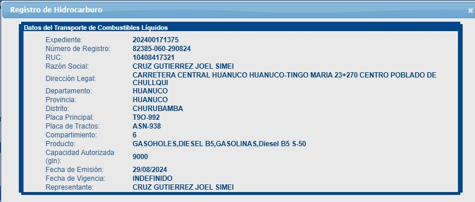
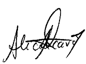

| INFORME DE SUPERVISIÓN N° {{osinumero}} |
Otros Destinatarios C/c: |
| Huánuco, 03 de Noviembre de 2026 | Expediente: 202600000000 |
A:Oficina Regional Huánuco - OSINERGMIN
De:Carlos Ejemplo Rivera
Supervisor ES Supervisión Técnica Demostrativa E.I.R.L.
Asunto:Fiscalización de SEGURIDAD DE MEDIOS DE TRANSPORTE DE COMBUSTIBLE LIQUIDOS Y OPDH, operado por TRANSPORTES MODELO DEMOSTRATIVO S.A.C.
Referencia:Registro de Hidrocarburos de OSINERGMIN N° 00000-060-000000
1.OBJETIVO:
El objetivo de la presente visita de fiscalización es de verificar el cumplimiento de las obligaciones relativas a las condiciones de seguridad del MEDIO DE TRANSPORTE DE COMBUSTIBLE LIQUIDOS Y OPDH de placa de rodaje principal Nº ABC-000, con Registro de Hidrocarburos N° 00000-060-000000, operado por TRANSPORTES MODELO DEMOSTRATIVO S.A.C., con Registro Único de Contribuyentes (R.U.C.) N° 20000000001 (en adelante, el Agente Fiscalizado).
2.ANTECEDENTES:
2.1.Con fecha 29 de agosto de 2024, TRANSPORTES MODELO DEMOSTRATIVO S.A.C. (en adelante, el Agente Fiscalizado) obtuvo el Registro de Hidrocarburos N.° 00000-060-000000, para operar la unidad vehicular de placa principal N.° ABC-000 y tracto XYZ-000, en la actividad de transporte de combustibles líquidos y OPDH, con capacidad autorizada de 9000 galones y seis compartimientos, con dirección legal en DIRECCIÓN FICTICIA PARA CAPACITACIÓN, HUÁNUCO, distrito de CHURUBAMBA, provincia y departamento de HUÁNUCO, conforme a la consulta del Registro de Hidrocarburos.
2.2.Mediante la Resolución de Autoridad de Fiscalización – Oficina Regional Huánuco N.° 000-2026-OS-GSE/DSR-OR HUÁNUCO, de fecha 10 de septiembre de 2026, se dispuso, en calidad de MANDATO, que TRANSPORTES MODELO DEMOSTRATIVO S.A.C. ponga a disposición la unidad de placa principal N.° ABC-000, con Registro de Hidrocarburos N.° 00000-060-000000.
2.3.Con fecha 11 de septiembre de 2026, mediante carta dirigida al Especialista Regional en Hidrocarburos de la Oficina Regional Huánuco, TRANSPORTES MODELO DEMOSTRATIVO S.A.C. comunicó que la fiscalización de la unidad ABC-000 se realizaría en la Carretera Central Huánuco–Tingo María, Km 23+270, Centro Poblado de Chullqui, distrito de Churubamba, Huánuco.
2.4.Con fecha 18 de septiembre de 2026, el Especialista Regional en Hidrocarburos, Ing. Luis Modelo Fernández, mediante Asignación N.° 00000-2026, asignó la Carta Línea N.° 0000000-0 a la empresa supervisora SUPERVISIÓN TÉCNICA DEMOSTRATIVA E.I.R.L., a fin de efectuar la fiscalización operativa a medios de transporte terrestre de CL, con visita, a la unidad vehicular de placa ABC-000.
2.5.Con fecha 24 de septiembre de 2026, el Ing. Carlos Ejemplo Rivera realizó la visita de fiscalización al medio de transporte de placa principal N.° ABC-000, operado por TRANSPORTES MODELO DEMOSTRATIVO S.A.C., y suscribió el Acta de Fiscalización correspondiente al Expediente N.° 202600000000.
2.6.Con fecha 25 de octubre de 2026, se elabora el presente informe de fiscalización, correspondiente a la Carta Línea N.° 0000000-0 y al Expediente N.° 202600000000, para su evaluación.
3.BASE LEGAL:
3.1.Ley Nº 26734, Ley de Creación de Osinergmin.
3.2.Ley Nº 27699, Ley Complementaria de Fortalecimiento Institucional de Osinergmin.
3.3.Decreto Supremo Nº 054-2001-PCM, que aprueba el Reglamento General del Osinergmin.
3.4.Decreto Supremo N° 006-2026-JUS, que aprueba el Texto Único Ordenado de la Ley N.º 27444, Ley del Procedimiento Administrativo General.
3.5.Resolución de Consejo Directivo Nº 150-2024-OS/CD, que aprueba el Reglamento del Registro de Hidrocarburos de Osinergmin. Y la Resolución de Consejo Directivo Nº 56-2026-OS/CD, que modifica el Reglamento del Registro de Hidrocarburos de Osinergmin.
3.6.Resolución de Consejo Directivo Nº 208-2020-OS/CD, que aprueba el Reglamento de Fiscalización y Sanción de las actividades energéticas y mineras a cargo de Osinergmin.
3.7.Resolución de Consejo Directivo N° 271-2012-OS/CD, que aprueba la Tipificación y Escala de Multas y Sanciones de Hidrocarburos de OSINERGMIN y modificatorias.
3.8.Decreto Supremo N° 026-94-EM y sus modificatorias, que aprueba el Reglamento
3.9.Decreto Supremo Nº 030-98-EM y sus modificatorias, que aprueba el Reglamento.
3.10.Decreto Supremo Nº 019-99-EM y sus modificatorias, que amplía el plazo para que camiones cisterna de transporte de combustibles no equipados para carga inferior, adecuen sus instalaciones.
3.11.Norma Técnica Peruana, NTP: 350.043-1, Extintores Portátiles
4. DESCRIPCION GENERAL:
4.1.El medio de transporte terrestre de combustibles líquidos y OPDH, operado por TRANSPORTES MODELO DEMOSTRATIVO S.A.C.; cuenta con la siguiente información:
IMAGEN N° 01 CONSULTA EN LÍNEA DEL REGISTRO DE HIDROCARBUROS
 |
Consulta del Registro de Hidrocarburos de fecha 22 de octubre de 2026: Registro N.° 00000-060-000000, titular TRANSPORTES MODELO DEMOSTRATIVO S.A.C., placa principal ABC-000, tracto XYZ-000, capacidad de 9000 galones y seis compartimientos. |
4.2.DIRECCION
La fiscalización realizada al medio de transporte terrestre de combustibles líquidos y OPDH, de placa principal ABC-000, se llevó a cabo en DIRECCIÓN FICTICIA PARA CAPACITACIÓN, HUÁNUCO, distrito de CHURUBAMBA, provincia y departamento de HUÁNUCO.
4.3.DE LA VISITA DE FISCALIZACIÓN
4.3.1.Con fecha 24 de septiembre de 2026, siendo las 10:16 horas, se inició la fiscalización a la unidad vehicular de placa principal ABC-000, operada por TRANSPORTES MODELO DEMOSTRATIVO S.A.C., con Registro de Hidrocarburos N.° 00000-060-000000. Se constataron las observaciones consignadas en el apartado II «Otros» del acta, conforme al siguiente cuadro:
TABLA Nº 01 Hechos Constatados, Consignados En El Acta De Fiscalización:
| N.º | INCUMPLIMIENTO NORMATIVO – BASE LEGAL | DESCRIPCIÓN DEL INCUMPLIMIENTO VERIFICADO | MEDIO PROBATORIO |
|---|---|---|---|
| OTRAS OBSERVACIONES |
Cada compartimiento del tanque de cargamento deberá ser provisto con venteos normales de presión y vacío, cada uno teniendo un área de sección transversal libre neta de 0.44 pulg2 (284 mm2). Venteos de presión deberán ser fijados para abrir en una presión manométrica de no más de 1 psi (6.9 kPa). Venteos de vacío deberán ser fijados para abrir en 6 oz (170 g). Donde un compartimiento del tanque de cargamento es diseñado para ser cargado o descargado con la cubierta del domo cerrada, el venteo o venteos descritos en 5.3.12.2 o venteos adicionales deberán limitar el vacío a 1 psi (6.9 kPa) y la presión del tanque a una presión manométrica de 3 psi (20.7 kPa) basada en la tasa máxima de transferencia de producto.
Base legal: 5.3.12.2 y 5.3.12.4 del Estándar NFPA 385 Estándar para vehículos tanque para líquidos inflamables y combustibles. Edición 2007, en concordancia con la cuarta disposición transitoria de Texto Único Ordenado de la Ley Orgánica de Hidrocarburos, aprobada mediante Decreto Supremo N° 0422005-EM. |
Tipo B: Durante la visita de fiscalización se verificó que las válvulas de presión y vacío de los compartimientos N.° 1, 2, 3, 4, 5 y 6 no especifican que limiten el vacío a 1 PSI (6.9 kPa) y la presión manométrica a 3 PSI (20.7 kPa). |
Foto N.º 23, 30, 39,47, 54 y 61. |
| OTRAS OBSERVACIONES |
Venteo de Emergencia para Exposición a Incendio:
Cada compartimiento del tanque de cargamento deberá ser equipado con uno o más venteos accionados por presión fijados para abrir en una presión manométrica de no menos de 3 psi (20.7 kPa) y cerrar cuando las caídas de presión debajo de 3 psi (20.7 kPa) del punto de seteo. Base legal: 5.3.13 del Estándar NFPA 385 Estándar para vehículos tanque para líquidos inflamables y combustibles. Edición 2007, en concordancia con la cuarta disposición transitoria de Texto Único Ordenado de la Ley Orgánica de Hidrocarburos, aprobada mediante Decreto Supremo N° 042-2005-EM. |
Tipo B: Durante la visita de fiscalización se verificó Que el Agente Fiscalizado deberá acreditar que los compartimientos N.° 1, 2, 3, 4 y 6 cuentan con venteos de emergencia para exposición a incendios, calibrados para abrir a no menos de 3 PSI y cerrar por debajo de 3 PSI del punto de venteo. |
Foto N.º 22, 29, 38,46, 53 y 60 |
Fuente: Acta de Fiscalización de Seguridad de Medios de Transporte de Combustibles Líquidos y OPDH N° 202600000000.
4.3.2.Culminada la fiscalización, se suscribió el ACTA DE FISCALIZACIÓN DE SEGURIDAD DE MEDIOS DE TRANSPORTE DE COMBUSTIBLES LÍQUIDOS Y OPDH correspondiente al Expediente N.° 202600000000, recibida por el Sr. PEDRO MODELO GARCIA, identificado con DNI N.° 00000000, en calidad de encargado de la unidad vehicular. La diligencia concluyó a las 15:20 horas.
5.ANEXO:
De la visita realizada a la unidad vehicular se recabó la documentación señalada en el Acta de Fiscalización.
I.ANEXO 1. REPORTE DE CIERRE SFH - CL 0000000-0
II.ANEXO 2. 202600000000-060 - PLAN DE CONTINGENCIAS
III.ANEXO 3. 202600000000-060 - GUÍA DE REMISIÓN
IV.ANEXO 4. 202600000000-060 - CAPACITACIÓN DEL CONDUCTOR
V.ANEXO 5. 202600000000-060 - CONSULTA RHO
VI.ANEXO 6. 202600000000-060 - CONSULTA RUC
VII.ANEXO 7. 202600000000-060 - PÓLIZA DE SEGURO
VIII.ANEXO 8. 202600000000-060 – CONSULTA EN LINEA RHO
IX.ANEXO 9. 202600000000-060-CERTIFICADO DE INSTALCION GPS
X.ANEXO10. 202600000000-060-CERTIFICADO DE VERIFICACION
XI.ANEXO 11 202600000000-060-TARJETA E INSPECCION TECNICA ABC-000,
XII.Anexo 12 202600000000-060-TARJETA E INSPECCION TECNICA XYZ-000
XIII.VIDEO DE OPERATIVIDAD DE LUCES
6.CONCLUSIONES:
De la visita de fiscalización a la unidad vehicular se concluye lo siguiente:
6.1.TRANSPORTES MODELO DEMOSTRATIVO S.A.C., la Ficha de Registro de Hidrocarburos N.° 00000-060-000000, NO CUMPLIÓ con lo establecido de las condiciones de seguridad de Medio De Transporte De Combustible Líquidos Y OPDH.
7.RECOMENDACIONES:
Por lo expuesto en el presente informe, se recomienda:
7.1.Comunicar a TRANSPORTES MODELO DEMOSTRATIVO S.A.C., con Ficha de Registro de Hidrocarburos N.° 00000-060-000000, las observaciones consignadas en el apartado II «Otros» del Acta de Fiscalización, a fin de que acredite su subsanación respecto de la unidad vehicular de placa principal ABC-000.
7.2.Asimismmo, se otorgue el plazo establecido de 30 días calendario para que la empresa pueda subsanar los incumplimientos de orden técnico y que no constituyen un alto riesgo para la seguridad (TIPO B), bajo apercibimiento de iniciar Procedimiento Administrativo Sancionador – PAS1.
Atentamente.
|
 |
|
|
Elena Referencia Torres DNI N° 00000000 Representante Legal SUPERVISIÓN TÉCNICA DEMOSTRATIVA E.I.R.L. |
Carlos Ejemplo Rivera CIP N° 000000 Fiscalizador SUPERVISIÓN TÉCNICA DEMOSTRATIVA E.I.R.L. |
1 El plazo se contabiliza a partir del día siguiente de habérsele trasladado al administrado el oficio de notificación del informe de fiscalización, vía SNE, en el que se deja constancia de los incumplimientos técnicos verificados. Versión 1.0 del Lineamientos de actuación en la fiscalización de seguridad de Medios de Transporte de Combustibles Líquidos y OPDH a través de camiones tanque y camiones cisterna, División De Supervisión Regional Gerencia de Supervisión de Energía.